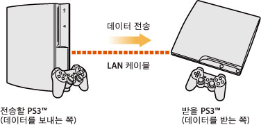
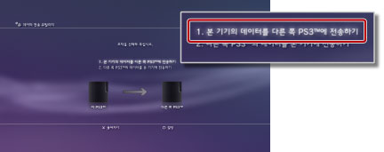
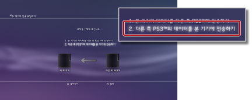

데이터 전송 유틸리티
LAN 케이블로 PS3™의 본체 스토리지에 저장된 데이터를 다른 PS3™의 본체 스토리지에 전송(복사 또는 이동)할 수 있습니다.

중요
- 이 기능을 사용하면 데이터를 받을 본체 스토리지에 저장되어 있는 데이터는 모두 삭제됩니다.
- 삭제된 데이터는 되돌릴 수 없으므로 실수로 중요한 데이터를 지우지 않도록 주의해 주십시오. 데이터의 소실/파손에 대해 당사는 일절 책임지지 않습니다. 이점 양해해 주십시오.
- 일부, 전송할 수 없는 데이터가 있습니다. 자세한 사항은 여기를 참조해 주십시오.
준비하기
데이터를 전송하기 전에 다음을 준비해 주십시오.
1. |
2대의 PS3™의 시스템 소프트웨어를 최신 버전으로 업데이트합니다. |
|---|---|
2. |
데이터를 전송할 PS3™를 준비합니다. |
- Sony Entertainment Network 계정을 작성하지 않은 경우에는 계정을 작성합니다.
- -
 (PlayStation™Network)의
(PlayStation™Network)의  (등록)을 선택한 후 화면의 지시에 따라 계정을 작성해 주십시오.
(등록)을 선택한 후 화면의 지시에 따라 계정을 작성해 주십시오. - PlayStation®Store에서 구매한 콘텐츠를 전송하는 경우에는 기기인증을 해제해 둡니다.
- - (PlayStation™Network) >
 (계정 관리) >
(계정 관리) >  (기기인증)을 선택해 주십시오.
(기기인증)을 선택해 주십시오. - 트로피 정보를 전송하는 경우에는 미리 PSNSM의 서버에 저장합니다
- - PSNSM에 로그인한 상태로 (PlayStation™Network) >
 (트로피 컬렉션)을 선택해 주십시오.
(트로피 컬렉션)을 선택해 주십시오. - LittleBigPlanet™의 게임 데이터를 전송받은 PS3™에서 사용하는 경우에는 [프로필]과 [작성한 레벨]을 저장 데이터에 백업해 둡니다.
중요
계정을 작성하지 않고 데이터를 전송한 경우에는 다음과 같은 제한 사항이 있습니다.
- 게임에 따라서는 데이터를 전송받은 PS3™에서 저장 데이터를 사용할 수 없는 경우가 있습니다.
- 전송한 저장 데이터를 사용하여 게임을 플레이했을 때 트로피를 획득할 수 없게 됩니다.
- 트로피 정보가 전송되지 않습니다.
데이터 전송하기
2대의 PS3™를, 전원을 끈 상태에서 작업을 시작해 주십시오. 이 기능을 사용하여 전송할 수 있는 데이터는 전송 받을 PS3™에 복사됩니다. 복사가 금지된 게임 저장 데이터 및 저작권이 보호된 콘텐츠 등은 이동됩니다.
1. |
LAN 케이블로 2대의 PS3™를 직접연결합니다. |
|---|---|
2. |
2대의 PS3™를 TV에 연결합니다. |
3. |
TV의 전원을 켜고 2대의 PS3™의 전원을 켭니다. |
4. |
데이터를 보낼 PS3™에서 |
5. |
[1. 본 기기의 데이터를 다른 쪽 PS3™에 전송하기]를 선택합니다.  준비 항목이 갖춰지지 않은 경우에는 화면의 지시에 따라 조작해 주십시오. |
6. |
데이터 전송 대기 상태가 되면 TV의 영상 입력을 데이터를 받을 PS3™로 전환합니다. |
7. |
데이터를 받을 PS3™에서 |
8. |
[2. 다른 쪽 PS3™의 데이터를 본 기기에 전송하기]를 선택합니다.  화면의 지시에 따라 데이터를 전송해 주십시오. |
 (설정) >
(설정) >  (시스템 설정) > [데이터 전송 유틸리티]를 선택합니다.
(시스템 설정) > [데이터 전송 유틸리티]를 선택합니다.알아두기
- 데이터 전송이 완료되면 데이터를 전송한 PS3™의 화면을 TV에 표시하여
 (유저)에서
(유저)에서  (본체의 전원 끄기)를 선택한 후 전원을 꺼 주십시오.
(본체의 전원 끄기)를 선택한 후 전원을 꺼 주십시오. - PlayStation®Store에서 다운로드한 콘텐츠가 있는 경우, 데이터 전송 후에 데이터를 받은 PS3™를 기기인증해야 합니다. 콘텐츠를 소유한 유저로 로그인하여 (PlayStation™Network) > ([계정 관리) > (기기인증)을 선택해 주십시오.
데이터 전송 유틸리티 기능의 제한에 대하여
데이터 전송 유틸리티 기능으로는 다음의 데이터를 전송할 수 없습니다. 또한 전송은 되더라도 재생할 수 없는 경우가 있습니다. 최신 정보는 각 지역 웹 사이트를 참조해 주십시오.
- 본체 스토리지에 저장한 SingStar™의 곡 데이터
- 저작권 보호된 동영상 파일(파일 타입: MGV, ETS)
- DivX® VOD 서비스에 대응하는 동영상 파일
- 본체 스토리지에 설치한 PlayStation®2 규격 소프트웨어
- - [노부나가의 야망 Online] 및 [확장 팩]
- - [Final FantasyXI] 및 [확장 데이터 디스크]
- - [SOCOM II: U.S. NAVY SEALs]및 [OPM* Issue 87, OPM* Issue 88, OPM* Issue 89, OPM* Issue 90에 동봉된 관련 디스크]
- - SOCOM 3: U.S. NAVY SEALs
- - SOCOM: U.S. NAVY SEALs Combined Assault
다음의 데이터는 데이터 전송 후에 조작이 필요합니다.
- GripShift™
- - 데이터 전송 후에 게임을 기동하면 에러 메시지가 표시되고 게임을 플레이할 수 없게 됩니다. 게임을 재다운로드 및 설치하면 바르게 기동할 수 있게 됩니다.
- Ghostbusters™, Ghostbusters™: The Video Game의 저장 데이터
- - 데이터 전송 후에 게임을 기동하면 저장 데이터가 인식되지 않습니다. 게임을 일단 종료한 후 다시 기동하면 저장 데이터를 사용하실 수 있게 됩니다.
| * |
Official PlayStation Magazine |
|---|
알아두기
소프트웨어의 판매 상황은 지역에 따라 다릅니다.